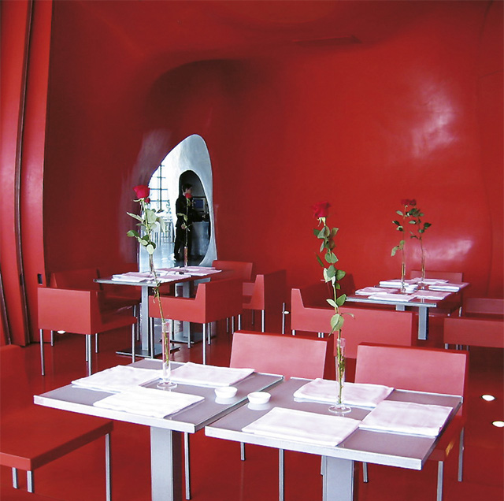
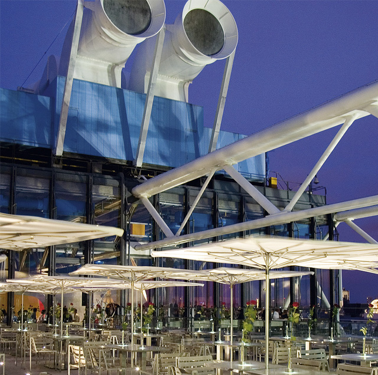

The modern restaurant was created seven years ago during the renovation of the Centre Pompidou, which was originally built in the 1970s. The new futuristic-looking restaurant, which is located on the 6th floor of the snazzy culture-centre, was designed by a Franco-New Zealand arhitechture team directed by Dominique Jacob and Brendan McFarlane. Tin bubbles rise from the floor to create amorphous forms, and the tables and chairs lining the glass façade are usually peopled by Parisian hipsters, especially during the evening. Long-stemmed red roses rest in elegant vases, which double as lamps for an additional source of illumination, on the cool white tables. The stylish beautés and beaus of the service team are a joy to behold. It is easy to overlook the odd blunder when the personnel look so chic and the cuisine is more than capable of compensating for any minor service shortcomings. The culinary pallet is unashamedly international – coquille St-Jacques and salmon carpaccio, duck foie-gras “suffisant pour deux”, red king-crab tom yam, and crispy duck “mandarina”. The portions are pleasantly opulent, and a pleasantly sophisticted wine list offers something for every budget. Restaurant Georges’ guests enjoy spectacular views across the city from the terrace. And a sunset over Paris is a truly unforgettable spectacle.


{kind=link}
{kind=link}